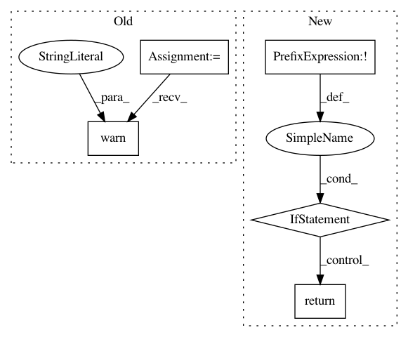

2df555898e86df488a52a93afd72769606aa0bdc,chainercv/extensions/semantic_segmentation/semantic_segmentation_vis_report.py,SemanticSegmentationVisReport,__call__,#SemanticSegmentationVisReport#Any#,198
Before Change
def __call__(self, trainer):
if not _available:
warnings.warn("scikit-image is not installed on your environment, "
"so a function embedding_tensorboard can not be "
" used. Please install scikit-image.\n\n"
" $ pip install scikit-image\n")
return
for idx in self.indices:
formated_filename_base = osp.join(trainer.out, self.filename_base)
After Change
)
def __call__(self, trainer):
if not _check_available():
return
for idx in self.indices:
formated_filename_base = osp.join(trainer.out, self.filename_base)
out_file = (formated_filename_base +
"_idx={}".format(idx) +
In pattern: SUPERPATTERN
Frequency: 3
Non-data size: 5
Instances
Project Name: chainer/chainercv
Commit Name: 2df555898e86df488a52a93afd72769606aa0bdc
Time: 2017-03-15
Author: Hakuyume@users.noreply.github.com
File Name: chainercv/extensions/semantic_segmentation/semantic_segmentation_vis_report.py
Class Name: SemanticSegmentationVisReport
Method Name: __call__
Project Name: chainer/chainercv
Commit Name: 5f287d9215a8a62c93abb87f578ab9bdc6c63b0e
Time: 2019-04-19
Author: yuyuniitani@gmail.com
File Name: chainercv/utils/image/read_image.py
Class Name:
Method Name: read_image
Project Name: chainer/chainercv
Commit Name: 5f287d9215a8a62c93abb87f578ab9bdc6c63b0e
Time: 2019-04-19
Author: yuyuniitani@gmail.com
File Name: chainercv/transforms/image/rotate.py
Class Name:
Method Name: rotate